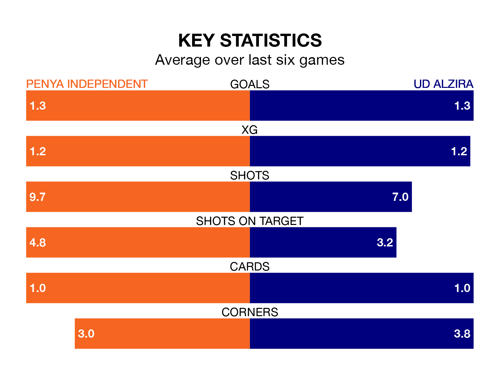

UD Alzira travel to Penya Independent on early Sunday in the Segunda División RFEF Group 3.
The visitors come into the game on the back of a draw in their last match, having tied with Andratx 2-2 at home, with goals from Tòfol Montiel and Dylan Iglesias Macíà.
Penya Independent, meanwhile, lost their last match, 1-0 against Terrassa.
Penya Independent are 17th in the table after 25 games, of which they have won five and drawn seven, earning 22 points.
Alzira are seven places ahead of the home team in 10th, with seven wins and 11 draws putting them on 32 points.
With 23 goals in 25 games so far this season, Penya Independent are the league's third-lowest scorers with 0.9 goals per game. And they are conceding more than average, letting in 37 goals at a rate of 1.5 per game.
The visitors, meanwhile, are average scorers, with 1.2 goals per game. They have conceded 1.3 goals per game.
Penya Independent are in mixed form in the Segunda División RFEF Group 3, with two wins and two draws from their last six games.
With a win and three draws over that period, Alzira's form is slightly worse – they have taken six points from 18, compared to the hosts' eight.
Updated: 09:34 (UTC), 08/03/24